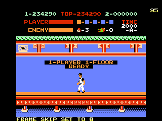

ｂｙ とつげき東北 トップページよりこのページの方が知名度高いかも(笑)

あ、ファミコン「スパルタンＸ」を知らない人は帰ってください。この俺の血と汗と涙の結晶も、スパルタンＸを知らない人には意味わかりません。
スパルタンＸには「24周目の謎」という伝説があった。
当時大ブームだった「ファミコンロッキー」というマンガにおいて「スパルタンＸの24周目では、恋人のシルヴィアが襲い掛かってくる」という設定があり、子供達の間でそれは伝説となっていた。
なおファミコンロッキーには、こういった様々な「ゲームの伝説」が登場するが、大半は真っ赤な嘘であり、一部が本当の裏技であるというややこしさだった（笑）。
スパルタンＸは当時、相当に上手な人でも３〜４周目までしか行けず、ゲームがかなり得意だった俺でも８周目とかで終わってしまい、この伝説の真偽を確認した者はその頃誰一人いなかった。
※ちなみに、「ファミコンロッキー」は、俺が人生で最も笑ったマンガの一つです。どんなギャグマンガも絶対にこれにかないません。
※中古書店などで見かけた人はぜひ買いましょう。はっきり言って１冊3000円でも安いもんです。
スパルタンＸ24周目の伝説の真偽をここで確認すると共に、最難関である４階の完全攻略法（？）を沿えてレポートする。
細かい攻略法などは他のページでいくらでもやっているので、主要部分だけを。
・24周目にシルヴィアは襲ってくるか

はい、いきなりだが10周目クリア。
10周目をクリアすると表記が「９→Ａ」になる。
１周目が「０」、２周目が「１」・・・10周目が「９」と表記され、11周目は「Ａ」であるから、当然12周目は当然「Ｂ」と表示されるかと思っていたが違った。
でも、タイトル画面で「Ｂ」の文字を使っているわけだから、「Ｂ」という文字も必要なはずなのに・・・という疑問も残る。不思議なゲームである。
「Ｃ」以降しばらくはそのままのアルファベット表記が続く。ところが、
ステージ「Ｊ」に当たる面の表記がまた違っていた。
ステージＪとは20周目（19回Ｘを倒した状態）である。
こちらはステージ「Ｋ」、つまり21周目に当たる面。もうすぐ伝説の２４周目だ（笑）。
ステージ「Ｌ」、「Ｍ」はそのままの表記。
ついにステージ「Ｎ」、つまり伝説の24周目！！！
ちなみに得点が異常に低いが、999990点を超えると000000点に戻るため。
24周目のミスターＸをノーミスでクリア。さあ、シルヴィアは本当に襲ってくるのか！？
な〜んて、あるわけないよな（笑）
いつも通りのエンディング。

むろん、何事もなかったかのように25周目が始まる。
当然だが、25周目をクリアしても今までと何も変わらない。
ちなみに40周目でやめた。
ステージの表記は、Ｑ，Ｗ，Ｘ，Ｚがそれぞれ「ステージＢ」と同様文字化けのようになっていて、その後はずっと文字化けだった。
というわけで、「スパルタンＸ24周目伝説」については「ただの嘘」という結論で（ ´Д`）y-ﾟﾟ
・４階攻略法
４周目あたりから、４階が異常に難しくなる。普通にプレイしていると、死因の８割が４階と言ってもおかしくないほど難しい。
それまではただまっすぐ進んでいるだけで毒蛾を避けられたのが、毒蛾のスピードが上がるために、運が悪いと毒蛾だけで死んでしまったりする。
４階を制するものはスパルタンＸを制する。ここでは安全に４階をクリアする方法を伝授する。
スタートした瞬間からずっと右を押しっぱなし。最初の毒蛾をジャンプキック。
２番目の毒蛾までノンストップで。ここで立ったままパンチ。
レバーはずっと右。次に出てくる毒蛾をジャンプキックで倒しながら進む。
そしてここ！
「二」と書かれた場所の右の柱（？）の下で左を向き、ここで毒蛾４匹倒せるまで立ちパンチ連打！（これで画面外にいる、左から来る毒蛾がいなくなる）
その後この位置で（少々シビアなので慎重にこの位置にあわせること）しゃがみパンチして左から来る毒牙を退治して、
すぐに右に移動してこの位置で毒蛾をパンチ（こうすると画面左から毒蛾が襲ってこなくなる）。
そのまま右に移動しながら下の毒蛾穴をジャンプする。
最後の毒蛾をジャンプキックで倒し、一目散に右へ。
これでノーミスで妖術使いと戦える。
このテクニックがないと、５周目あたりまで行くことさえ比較的困難だと思う。
妖術使いと戦う時には、必ず敵をナイフ使いにすべし。
攻撃を当てて妖術使いがワープ（？）している間、自分は硬直してしまう。
この時つかみ男につかまれるとダメージがでかい（上、自由に動けないので再び実体化した妖術使いの火の玉を食らうことがある）。
妖術使いにしゃがみパンチを当てる時は、充分連射すること。
ナイフ使いと同様「攻撃を食らうと次の火の玉を投げてくる」習性があるので、素早く連射しないとダメージを食らう。
また懐に入っていない状態で火の玉を投げられた時には、しゃがみパンチorローキックで火の玉を必ずつぶそう（上段の場合は無視）。
少し遠い間合いでヘビを出されたらご愁傷様。スタートボタン連打しながらゆっくり相手を見て対処しよう（笑）。
・基本攻略テクニック
通常、面をクリアするためにボスのいる方向へなるべく多く進むことを考える。
後ろから敵が出た場合も、ギリギリまで近づいたところで振り返りざまに攻撃することが重要だ。
少しでも早く先に進むことで、少しでも敵の出る数が減り、ダメージを受けにくくなるからだ。
また後ろからナイフ使いが出た場合、それを倒さずに残しておけば後ろから他に敵が出てこなくなるので、後ろから出たナイフ使いは基本的にボスまで連れて行くことが重要だ。
しかし、このように「つかみ男＋ナイフ使い」というような位置関係で敵が出てくることがあって、この場合は例外。
画面のように、すぐに敵に近づこう（画面は３階で、左側へ進むとボス）。
そうしないと、
ナイフとつかみ男が重なってしまう。
この画面程度の状況なら、当然「ナイフをジャンプで避けつつジャンプキック」でノーダメージになるが、つかみ男が広い間隔で２〜３人いる場合は、どうやっても避けられない状態になることがある。
相手側に近づいて素早くつかみ男を倒すと、上段ナイフならしゃがんで、下段ナイフなら直後のジャンプでかわすことができる。
同様に、左側のナイフも避けられる。
ナイフ使いで注意する点は、「攻撃を１発当てると、（前回ナイフを投げたタイミングにかかわらず）すぐに次のナイフを投げてくる」ことだ。
したがって、１発攻撃を入れたら、ナイフを投げるまでに次の攻撃を必ず当てる必要がある（要するに、２発攻撃を一気に入れて倒せ、ということ）。
ナイフ使いにはさまれた時などに、片方のナイフ使い（Ａ）に１発だけ攻撃を当てた状態で、もう片方（Ｂ）の投げたナイフをジャンプで避けようとしたりすると、攻撃を食らったことによってＡが次のナイフを上段に投げ、それを食らって地上に落ちてＢのナイフも食らう、というようなことにもなりかねない。
５階などでこれを食らうとＸを倒すのに失敗したりするので絶対にこのようなことをしてはいけない。
もしもナイフ使いに２発の攻撃を当てることが難しいほどに他の攻撃が迫っている場合は、中途半端に１発だけ攻撃したりせず、先に他の攻撃を避けてから一気に攻撃するようにしよう。
こちらが攻撃を加えない限り、思っているよりも充分にナイフとナイフの間隔は長い。
また、ナイフ使いに対してジャンプキックしてはいけない。ジャンプキックの直後に次の技を出すまでには少し時間がかかり、その間にナイフを投げられてしまう。
ちなみに、上手になってくるとほとんど１歩も立ちどまることなくボスまで行けるようになる。
後ろから来る敵には「前ジャンプ後ろ向きジャンプキック」（振り向きざまにジャンプ）できるし、前から来る敵はほとんどジャンプキックorトムトムはジャンプで避けでやりすごせる。
また後ろから飛んでくる下段ナイフは前向きのジャンプでかわせる。いちいちナイフ使いを全部殺しながら進んだりしていると敵が多く出てダメージを食らってしまう。
と言っても敵の出方の運不運もあるし、完全に立ちどまらないわけではないが。
どうしてもダメージを受ける状態の時は、ナイフを優先的に避けよう。
トムトムのジャンプ攻撃はナイフよりダメージが小さい。またつかみ男の攻撃を避けようと必死になって、ナイフを食らったりするとダメージが大きくなる。
全ての階で、ナイフ１発分より少ないダメージで確実にボスまで行けるようになれば、ほとんど死ぬことがなくなる。